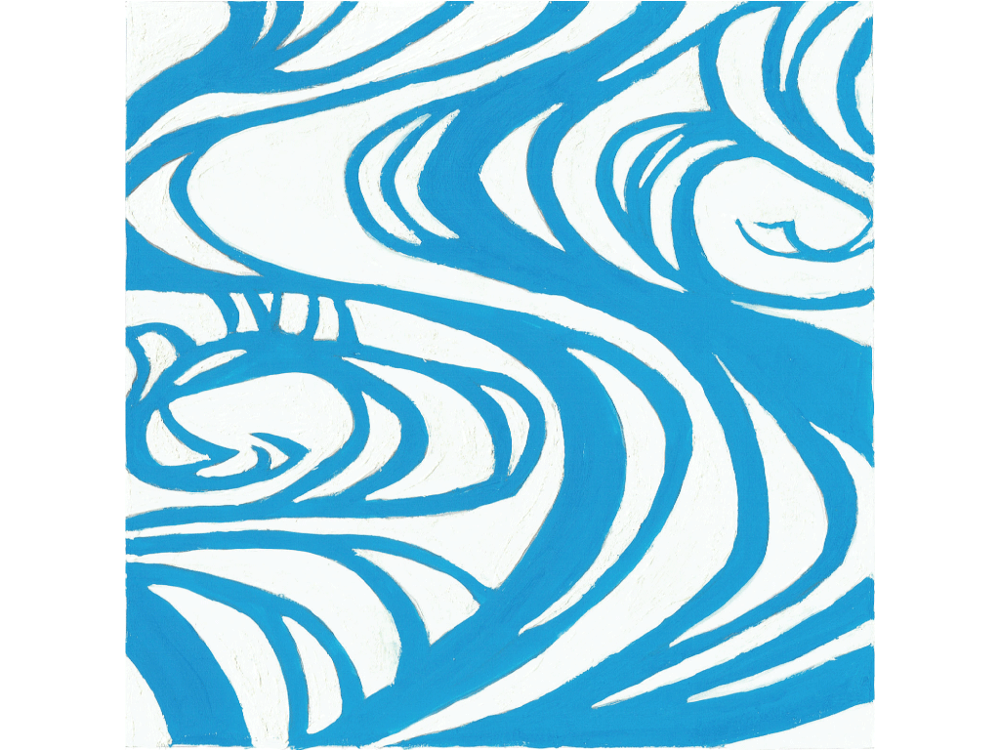
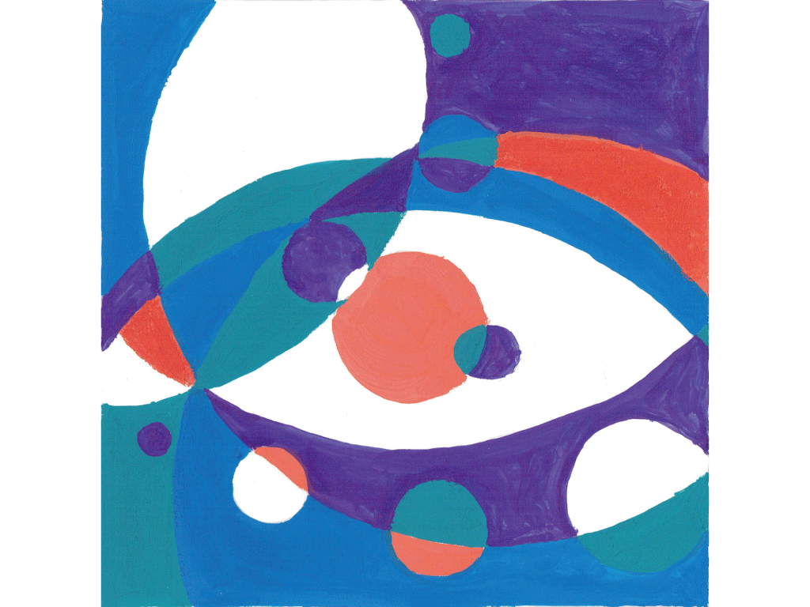
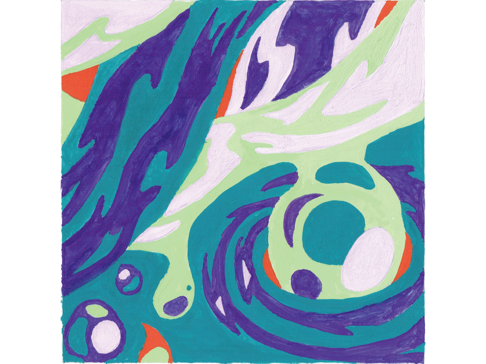
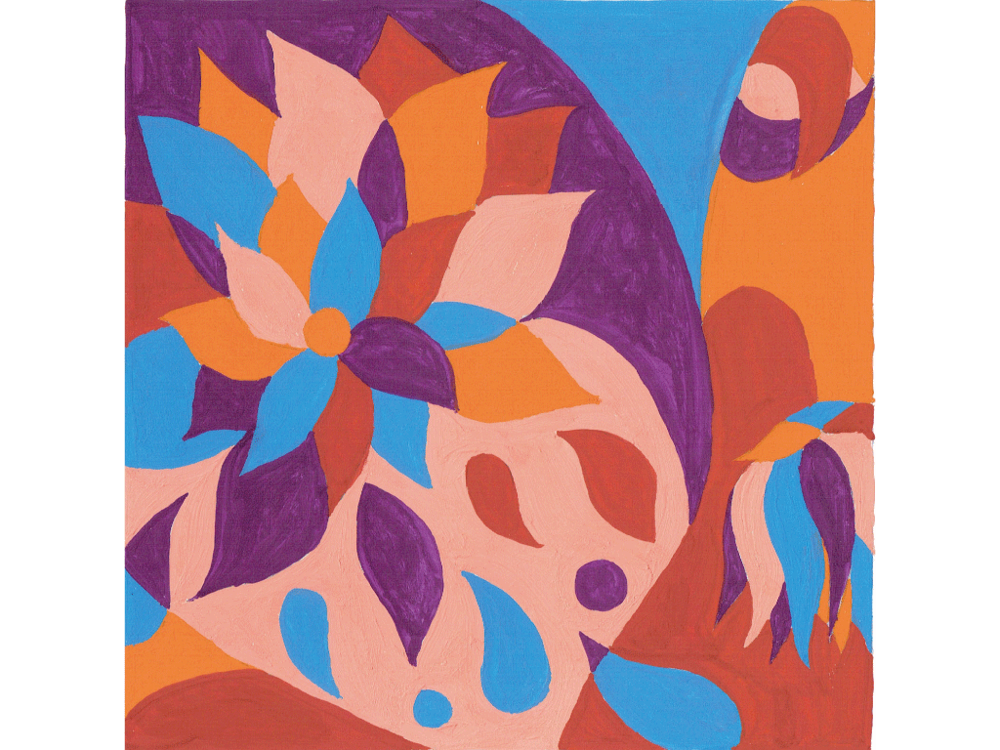

戻る

こちらの作品は、尾形光琳の「紅白梅図」の一部を切り取り、模写した作品です。 水の流れゆく感じを表現できるように意識しました。

こちらの作品は「円」をモチーフに正円だけ尚且つ５色のみで作成しました。 所々、目に見えるようになっているのがポイントです。

こちらの作品は「水」をモチーフに5色のみで作成しました。 水の流れゆく様子を抽象的に表現することを意識しました。

こちらの作品は「花」をモチーフに5色のみで作成しました。 蕾から咲き誇り、いずれ枯れてしまう花の儚さを意識しました。